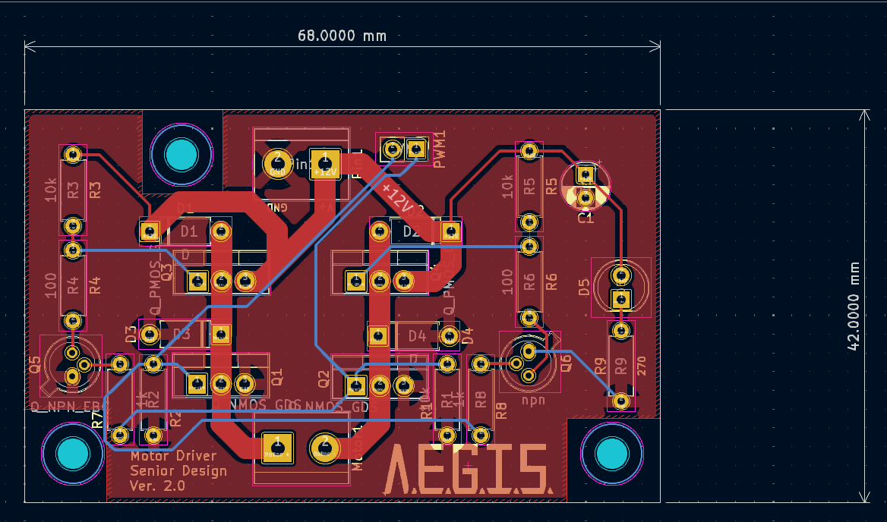
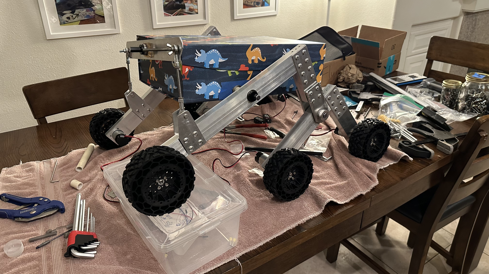

August 2025
AEGIS
AEGIS
Room to grow!
Prototyping and adding revisions to electrical components became difficult as a team so a new microcontoller board was designed with all our teams needs in mind, along with room to grow. But first we had to make a schematic diagram with all necessary pins and their respective nets.

Once the first version of the schematic diagram was completed, the microcontroller board was put into construction.

Data!
Still working on the software and controls of the rover, along with revising electrical components, we realized there is a missed opportunity to aggregate the telemetry data from the rover into a single location that is easy to use. Giving way to the website. Starting with structure and function then adding style.
Accessories!
Along with a new plywood frame, we started to 3D print modules that will attach to the chassis of the rover. One such design is the LiDAR pillar and mount. The stepper motor is concealed inside the pilar where the top part rotates along with the LiDAR. Giving function to the essence of our project.

It's Alive!
The protoype rover is equiped enough to make its first trip! A massive accomplishment for the team and certainly a moment to enjoy.
Maybe a little too excited...
We're Engineers!
Quickly realizing our breadboards are limiting our ability we moved to a more robust platform, perf boards and pcbs (no breadboards were harmed in this process...).
Previous designs for the stepper motor driver, the DC motor driver, current meter and more are redesigned on these platforms allowing us more modularity and control.

Frankenstein's Monster! Looks pretty good...
Our first mechanical prototype that will carry us through mountains of testing is complete. The design was made from mostly donated parts, cut with a CNC and tapped with a drill press. Rivets everywhere.
Thank you Mark Terryberry for helping bring these designs to life! Isn't that dinosaur box glorious!
We have also achieved our first LiDAR Scan! Plotted using MATLAB, some with 100's of thousands of points, some with millions. Still some kinks to work out.
This is when things got exciting.
Parts started to come in from our first purchase order and we could begin our experimental phase. Starting off with some basic sensors and how they interact with a microcontroller. The first to be tested were the Ultrasonic Sensors which can read distance to an object based on received trigger signal.
We also started to learn more about motor drivers and how they are used to control DC motors in various applications. Designing our own breadboard version to get a better idea on how to design one moving forward.
Research, research, and oh yeah, more research!
As the Spring semester started, we began to delve into research. Asking ourselves questions like: What is the function and goal of our rover? What materials do we need to build the body? What size wheels and DC Motors do we get? How do we control the rover? How will we power everything? Questions began to flood the team, and we started to tackle each problem, one by one.
The idea of AEGIS is born.
A passion for ingenuity and learning led to the start of the team. In the following weeks project goals and concepts designs were created, along with a broad sprectrum of learning opportunities for each member.